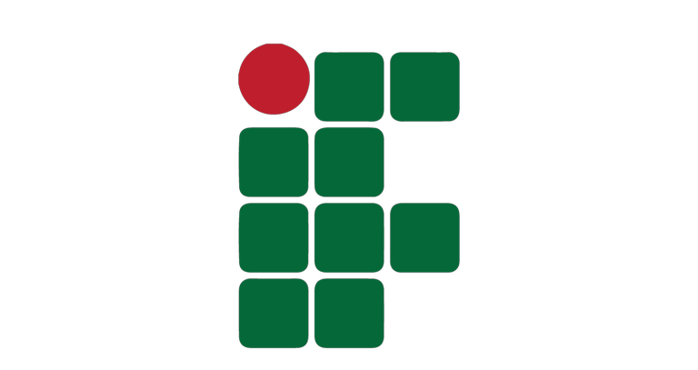
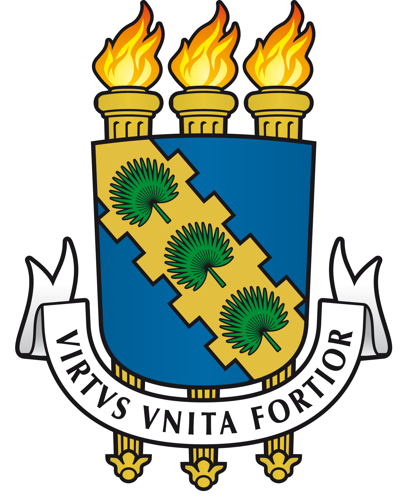

Atuações

Instituto Federal de Educação, Ciências e Tecnolog, IFCE, Brasil.
Começou como bolsista em 2008 e 2009, depois tornou-se professor em 2010 e 2011, teve um vínculo como professor em 2011 e 2012, e desde 2014 é um docente EBTT com dedicação exclusiva. A carga horária variou ao longo dos anos, sendo de 4 horas nos primeiros anos como professor e depois aumentando para 40 horas com o vínculo atual.

Universidade Federal do Ceará, UFC, Brasil.
Foi estudante de mestrado entre 2010 e 2012, e posteriormente, de 2013 a 2014, exerceu o cargo de professor substituto com uma carga horária de 40 horas como servidor público.
Faculdade Lourenço Filho, FLF, Brasil.
Durante o período de 2011 a 2013, teve um vínculo celetista com a Faculdade Lourenço Filho no Brasil, onde atuou como professor com uma carga horária de 16 horas.